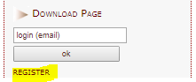
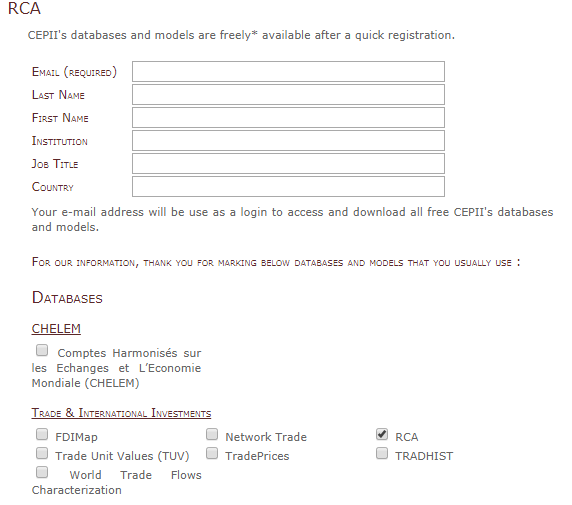
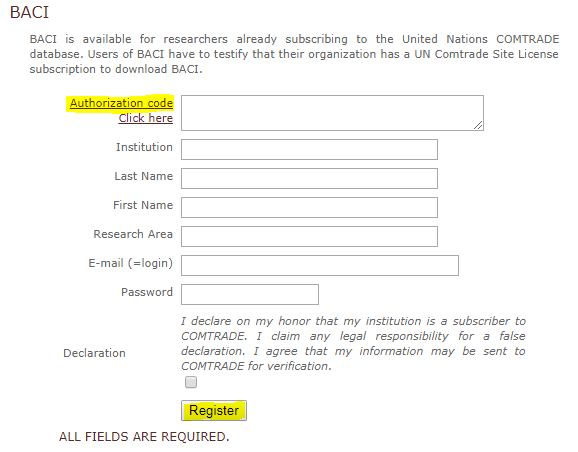

CEPII is a French research center in international economics which produces studies, research, databases and analyses on the world economy and its evolution. It was founded in 1978 and is part of the network coordinated by the Economic Policy Planning for the Prime Minister. It conducts researches using the databases, models, expertise and international cooperation. CEPII is organized around four research programs. The overview of the CEPII activities is here: http://www.cepii.fr/CEPII/en/cepii/cepii.asp. On one of the following links you may find more information about CEPII’s researches, publisations, events and data.
CEPII gathers and harmonizes data from different sources, produces indicators and statistical measures. Data and figures are available online as well as interactive panorama of 80 countries on CEPII.
HIGHLIGHTS
In details
(Please note, below, we describe only relevant data solutions. In the end we provide information how to access this data)
CHELEM - Comptes Harmonisés sur les Echanges et L’Economie Mondiale - the CHELEM database [International trade flows, balances of payments and world revenues], developed by the CEPII, has been recognized as one of the most useful tools to analyse global economic trends in a framework combining coherence, exhaustiveness and reliability. Available on line by subscription at: https://chelem.bvdep.com/.
Geography
GeoDist provides several geographical variables, in particular bilateral distances measured using city-level data to account for the geographic distribution of population inside each nation. Different measures of bilateral distances are available for 225 countries. For most of them, different calculations of “intra-national distances’’ are also available.
Gravity - CEPII makes available a “square” gravity dataset for all world pairs of countries, for the period 1948 to 2015, allowing the estimation of international flows as a function of GDP, population and trade costs.
Market Potentials - Market Potentials offers six distinct indices of proximity to world markets for more than 150 countries from 1960 to 2009. Since the early 1990s’ international trade analyses has emphasized how proximity to large markets determines economic development and shapes international trade patterns.
Macroeconomics
EQCHANGE - QCHANGE is a global database of annual indicators on effective exchange rates.
Institutional Profiles - The “Institutional Profiles Database” (IPD) provides an original measure of countries’ institutional characteristics through composite indicators built from perception data. The database was designed in order to facilitate and stimulate research on the relationship between institutions, long-term economic growth and development.
Production & Specialization Indicators
ProdComp - The ProdComp database allows price and productivity levels to be compared for several countries in the manufacturing sector.
TradeProd - The TradeProd database proposes bilateral trade, production and protection figures in a compatible industry classification for developed and developing countries.
Profiles
Trade & International Investments
BACI - BACI is the World trade database developed by the CEPII at a high level of product disaggregation.
FDIMap - The FDI (Foreign Direct Investment) database provides a worldwide coverage (96 countries of the GTAP 6.2 database for stocks and 70 countries for flows) of harmonized bilateral flows and stocks of FDI for 26 sectors, in line with the Eurostat classification.
Network Trade - This dataset explores international trade data through the lenses of Network Analysis, in order to visualize the World Trade Network and describe the topology of the network of world trade. The details of such analysis are provided in a companion paper De Benedictis et al (2013).
RCA - The new RCA database contains revealed comparative advantage measures (RCA) obtained by using the methodology suggested by Costinot et al. (2012) - adjusted to some extend for a proper worldwide comparison of indexes.
Trade Unit Values (TUV) - The TUV database is a worldwide unit value database developed by the CEPII.
TradePrices - Export and import price indices can be used to analyse terms of trade, inflation or volume/price elasticities in open economies.
TRADHIST - This dataset has been built in order to analyze in historical perspective, using gravity equations, the globalization process through bilateral International trade data (see Fouquin and Hugot Working paper n°2016-13, Mai 2016).
World Trade Flows Characterization - Trade Unit Values, CEPII’s database providing a world trade matrix of unit values for more than 230 countries and 5 100 products over the period 2000-2015.
Trade Protection
AVEs-Services - AVE-Services contains ad valorem equivalents of restrictions on cross-border trade in services for 118 countries and 9 sectors, using the GTAP databaseof trade in services for 2011.
MAcMap-HS6 - Market Access Map (MAcMap) provides a disaggregated, exhaustive and bilateral measurement of applied tariff duties.
NTM-MAP - The CEPII NTM-MAP (Non-Tariff Measures MAP) database contains indicators measuring the incidence of Non-Tariff Measures by using different methodologies and the UNCTAD TRAINS Database as source data.
To log in into any of the above mentioned databases, you need to follow a simple procedure:
Go to the page of any database, for example RCA;
On the right side, under “Download page” click Register and follow the registration procedure. Tick all databases, which you need:
 
Confirm your email in the confirmation email received after completing registration;
Log in to the database inserting your email under “Download page” on the right side of the page.
After log in in, most of the data is downloaded via links in the xls or stat data files.
BACI is the World trade database developed by the CEPII at a high level of product dis aggregation. To access BACI database, you need to do the following:
Go to the BACI website at: http://www.cepii.fr/CEPII/en/bdd_modele/inscription.asp?id=1
Select REGISTER in the right panel:
Insert all information on the BACI registration page including CT token in the field Authorization code (see Comtrade section for more information). After you have inserted everything, press register.

Copyright © 2017 Eduard Bukin. All rights reserved.